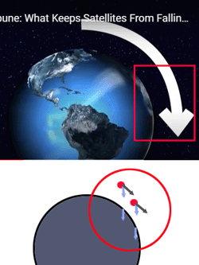

[23] 국가9.17년(하)16번(나)What keeps satellites from falling....
* 가독성을 위해서 임의로 단락을 나누었어요.
(여기서 단락은 {생각의 가장 작은 단위} 따위랑은 아무 관계없어요.)
최대한 영어어순대로 해석해 보아요
You asked us, "What keeps satellites from falling out of the sky?"
Over the last half-century, more than 2,500 satellites have followed the first one into space.
What keeps them all afloat? It is a delicate balance between a satellite's speed and the pull of gravity.
Satellites are basically continuously falling. Crazy, right?
They fall at the same rate that the curve of the Earth falls away from them
if they're moving at the right speed.
Which means instead of racing farther out into space or
spiraling down to Earth, they hang out in orbit around
the planet.
Corrections are often needed to keep a satellite on the straight and narrow.
Earth's gravity is stronger in some places than others.
Satellites can get pulled around by the sun, the moon and even the planet Jupiter.
You asked /us,
여러분은 묻는다 /우리에게,
"What keeps satellites /from falling /out of the sky?"
"무엇이 유지시키나요? 인공위성을 /떨어지지 않게 /하늘로부터"라고
: keep A from B(A가 B 못하게 하다)
Over the last half-century,
지난 반 세기동안 ,
more than 2,500 satellites have followed /the first one /into space.
2,500대 이상의 인공위성들이 따라갔다 /첫번째 위성을 /(어디를 향해?) 우주를 향해
--
What keeps them all /afloat?
무엇이 그들 모두를 /떠다니게 하는 걸까?
It is a delicate balance /between a satellite's speed and /the pull of gravity.
그것은 민감한 균형이다 /(뭐와 뭐사이의 균형?) 인공위성의 속도와 /중력의 끌어당김 사이
Satellites /are basically continuously falling. Crazy, right?
인공위성들은 /기본적으로 계속해서 떨어지는 중이다. 말이 안되지 않나?
They fall /at the same rate
그것들은 떨어진다 /똑같은 속도로
that the curve of the Earth falls away /from them
(무엇과 같은 속도?) *지구의 곡면이 떨어지는 속도 /(누구로 부터?)그들(=위성들)로 부터
:*(지표면)
: 아래 그림에서 빨간박스 부분
: 지표면이 평면이 아니라 아래로 둥글러져 있어서 바닥에 부딪히지 않는다는 이야기
if they're moving /at the right speed.
만약 그들이 이동한다면 /*올바른 속도로
*(균형이 되는 올바른 속도)
Which means /instead of *racing farther out /into space
그 말은 의미한다/ 질주하는 대신 멀리 바깥으로 /우주를 향해
*원문에는 racing 대신 hurtling을 사용함.
or spiraling down /to Earth,
또는 나선형을 그리며 /떨어지는 대신에 /(어디를 향해서?) 지구
:또는 나선형을 그리며 지구를 향해 떨어지는 대신에
:앞에 instead of에 이어짐
they hang out /in orbit /around the planet.
그것들은 돌아다닌다 /궤도에서 /(무엇을 중심으로?) 행성.
Corrections are often needed /to keep a satellite /on the straight and narrow.
조정작업들이 자주 필요하다 /(뭐하려고?)유지하려고 위성을 /바르게.
Earth's gravity is stronger /in some places /than others.
지구의 중력은 더 강하다 /어떤 지역에서는 /(어디 보다?)다른 지역들보다.
Satellites can get pulled /around
인공위성들은 당겨질 수도 있다 /주변으로
by the sun, the moon and even the planet Jupiter.
(뭐에 의해?) 태양, 달, 그리고 심지어 행성 목성.

rate
/속도, 비율....
hurtle
/질주하다....
A runaway car came hurtling towards us.
도주 차량 한 대가 우리를 향해 돌진해 왔다.
the straight and narrow
/바른 생활
/the proper, honest, and moral path of behaviour
---
His wife is trying to keep him on the straight and narrow.
그의 아내는 그가 계속 바른 생활을 하도록 하기 위해 노력하고 있다.
---
목록으로 돌아가기